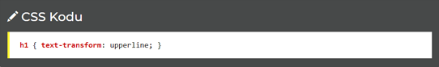
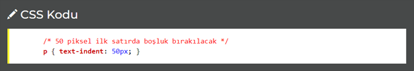

CSS Yazılar
Bu sayfada HTML sayfanızda kullandığınız yazıların değiştirebileceğiniz belli başlı özellikleri (renk, hiza, kalın vb) hakkında bilgi verilecektir.
Yazı biçimlendirme ile ilgili komutlardan tanıyacaklarımız:
color: Yazı Rengi
Yazının rengini belirlemenizi sağlar( Renkler hakkında bilgi için tıklayın).
Yazı biçimlendirme ile ilgili komutlardan tanıyacaklarımız:
text-align: Hizalama
Yazının yatay yönde ne şekilde hizalanacağını belirtmenizi sağlar. En çok kullanılan dört hizalama yöntemi:- left : sol
- right : sağ
- center : ortalanmış
- justify : iki yana yasla
text-decoration: Yazı Biçimi
Yazının biçiminde bazı değişiklikler yapmamızı sağlar. Örneğin tarayıcı varsayılanında sürekli A elementlerindeki altı çizgili dekorasyonu kaldırmak için aşağıdaki yazılabilir.text-transform: Yazıda Değişiklik Yap
Yazılan bir yazıyı otomatik olarak tüm harflerini büyük harfle yazmayı ya da tamamını küçük harfle yazmayı sağlar.- uppercase : tüm harfleri büyük harf yap
- lowercase : tüm harfleri küçük harf yap

text-indent: Soldan Boşluk
Bir yazının başında belirtilen büyüklükte boşluk bırakmanızı sağlar. Özellikle paragraflar için kullanılır.
NOT: Piksel (px), inç (in), punto (pt), santim (cm), yüzde (%) gibi stillerin sonuna eklenen ölçüler her zaman sayıya bitişik yazılır. 50px doğru ancak 50 px yanlış.
Diğer Yazı Şekillendirme Komutları
line-height: Satır yüksekliğini belirtmemizi sağlar.letter-spacing: Harfler arasında belirtilen değerde boşluk koyar.
word-spacing: Kelimeler arasında belirtilen değerde boşluk koyar.